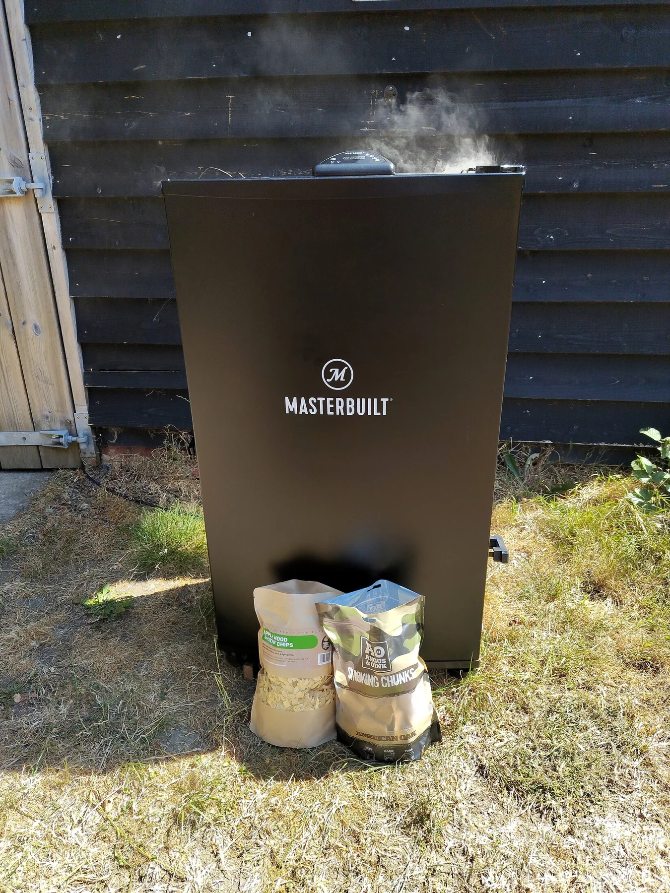

People First
The event, the guests and the atmosphere you want to create guide the conversation from the beginning.
Founder & Pitmaster
Established in 2024, Buys Braai’s grew from Oliver’s passion for South African-style braai (BBQ) and bringing people together around great food. The idea is simple: catering should feel right for the people, place and occasion rather than being forced into a standard package.
From private parties and weddings to corporate functions, festivals and markets, every event begins with a conversation about the venue, guest numbers, food preferences and dietary requirements. Oliver then shapes the menu and serving approach around those details.
Gas cooking provides reliable and efficient event catering, with wood or charcoal options available where suitable. Whichever approach fits the event, the focus stays on well-planned food and a relaxed experience built around your guests.
 Prep
Prep

Smoke Rest
Rest
The Buys Braai’s approach
South African-style braai catering should bring people together without making the planning feel complicated.
The event, the guests and the atmosphere you want to create guide the conversation from the beginning.
Menus and service are discussed around your guest numbers, preferences and dietary requirements rather than a one-size-fits-all package.
Reliable gas cooking works well for many events, while wood or charcoal options can be considered where the setting is suitable.
Planning an event in Kent or the surrounding area?
Tell Oliver about it